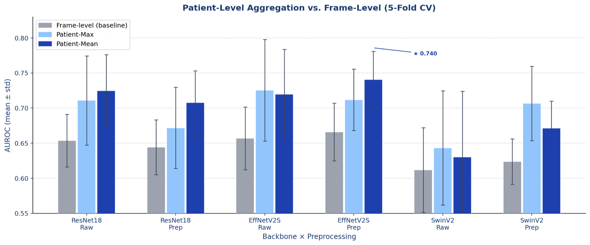
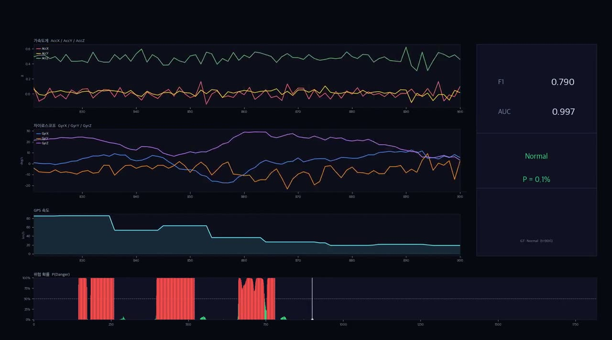
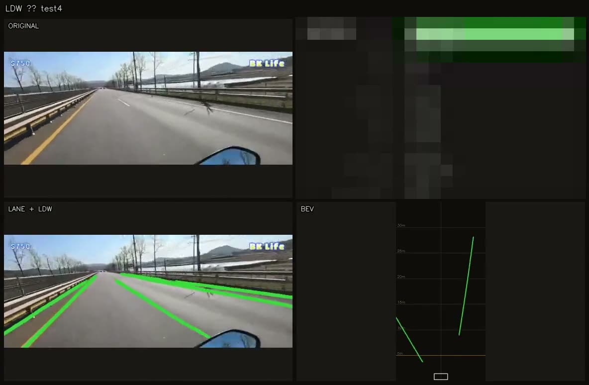

공공서비스 AI 에이전트 행위 기반 위험 유형 분석 및 평가기준 도출
AI 에이전트가 공공서비스를 안내·신청하는 과정의 행위를 위험유형별로 판정하는 평가방법을 설계했습니다. 제안서 작성과 발표에 참여했고, 목업 환경과 채점기를 직접 만들고 그 성능을 검증했습니다.
- Agent Safety
- LLM Evaluation
- 채점기
- 목업 환경
SenscoreAI Lab · 데이터센스에서 연구 중
Research focus Reasoning Verification, LLM Evaluation, Vision-Language-Action
한국외국어대학교 독일어과에 재학 중인 이원경입니다. AI 비전공자로 출발해 2026년 1월부터 SenscoreAI Lab에서 학부생 인턴으로, 6월부터는 데이터센스에서 연구원으로 일하고 있습니다. 전립선암 초음파 영상 분류, 이륜차 위험운전·차선이탈 판별, 추론형(CoT) 학습데이터 구축을 거쳐, 지금은 AI 에이전트의 안전성 평가와 자기설명 기반 신뢰 연구를 하고 있습니다.
본 페이지는 연구를 함께할 분들과 채용 담당자분들께 제 연구를 소개하는 페이지입니다.
Interested in understanding how AI systems reason, recognize uncertainty, and make reliable decisions in real-world environments.
모델의 추론 과정이 정답·근거와 맞는지 검증하는 방법
관련: 추론형(CoT) 학습데이터 구축LLM의 답과 추론 품질을 믿을 수 있게 측정하는 평가 체계
관련: AI 에이전트 행위 기반 평가 (ETRI)시각·센서 정보를 이해하고 실제 환경의 행동으로 이어지는 모델
관련: 비전 기반 차선이탈 경고About
AI는 에어컨처럼 원리를 몰라도 삶 속에서 자연스럽게 작동해야 한다고 생각합니다. 현장의 사람을 만나 기술로 문제를 푸는 과정에서 세 가지를 가장 중요하게 여깁니다.
현장의 사람을 만나 목적을 이해하고, 필요한 데이터를 구체적으로 요청합니다. 진행 상황을 자주 공유하며 함께 방향을 맞춰 갑니다.
막연한 목적을 풀 수 있는 문제로 쪼갭니다. 결과가 기대와 다를 때는 원인을 분석해 문제를 다시 정의합니다.
작은 결과물이라도 빨리 만들어 보여 주고 피드백을 주고받습니다. 빠르게 검증하고 고쳐 나가며 완성도를 높입니다.
Timeline
막대를 누르면 해당 프로젝트로 이동합니다.
SenscoreAI Lab 학부생 인턴 2026.01 – 현재
2026.01 – 현재공공서비스 AI 에이전트 위험 평가 (ETRI) 2026.10 – 11
2026.10 – 11자기설명 기반 신뢰 모델 연구 (ETRI) 2026.10 – 11
2026.10 – 11AI 모델 성능 향상을 위한 28종 자격증 기반 추론형 학습데이터 구축 2026.06 – 09
2026.06 – 09TRUS 전립선암 분류 연구 · 학회 발표 2026.03 – 05
2026.03 – 05이륜차 안전·위험운전 판별 (산학) 2026.01 – 06
2026.01 – 06비전 기반 차선이탈 경고 (산학) 2026.01 – 06
2026.01 – 06AI-native 웹 서비스 명세 (palcar) 2026.02 – 03
2026.02 – 03베어링 잔여수명 예측 챌린지 2026.05 – 07
2026.05 – 07Projects
카드를 누르면 목적·역할·결과와 이미지·영상을 자세히 볼 수 있습니다.
AI 에이전트가 공공서비스를 안내·신청하는 과정의 행위를 위험유형별로 판정하는 평가방법을 설계했습니다. 제안서 작성과 발표에 참여했고, 목업 환경과 채점기를 직접 만들고 그 성능을 검증했습니다.
방법론·모델평가·이용자연구 세 부문으로 수행하는 과제에서 이용자연구 부문 책임을 맡아, 이용자 실험의 참여자 모집과 조건 배정, 실험 자료 관리를 담당합니다.

환자 단위 평균 집계(mean aggregation)로 6개 백본×전처리 조합 모두에서 AUROC를 높였습니다. 최고 0.740.

고고에프앤디 산학협력. 9축 IMU 데이터로 위험운전을 가르기 위해 주행 실험을 직접 설계해 레이블 데이터를 만들고, 정상/위험 분류 ROC AUC 0.9 이상을 확인했습니다.

고고에프앤디 산학협력. 카메라 영상만으로 차선을 검출하고 BEV 좌표에서 차로 중심 대비 offset으로 이탈을 판단하는 로직을 직접 설계했습니다.
독자 AI 파운데이션 모델 프로젝트 공동활용 데이터 공급 지원사업
데이터센스 연구원. 텍스트 정제, LaTeX 변환, reasoning_trace 작성과 정합성 검증.
변화율 기반 동역학 피처와 Causal TCN, 베어링별 동적 보정 정책.
코딩 에이전트가 읽고 바로 구현할 수 있는 형태로 요구사항을 정리했습니다.
Experience & Education
2026.06 – 현재
2026.01 – 현재
한국외국어대학교 Social Science & AI융합학부
2024 – 2026
재학 중
2015 – 2017
졸업
Presentations & Awards
2026.05.08
학회 포스터 발표 · 제1저자
Patient-Level Mean Aggregation Improves Prostate Cancer Detection in TRUS Images Under Limited Data
2026
데이터 챌린지 · 전체 9위
베어링 잔여수명 예측, Team pairing.
Contact
본 페이지는 연구를 함께할 분들과 채용 담당자분들께 제 연구를 소개하는 페이지입니다.
연락은 메일로 부탁드립니다.